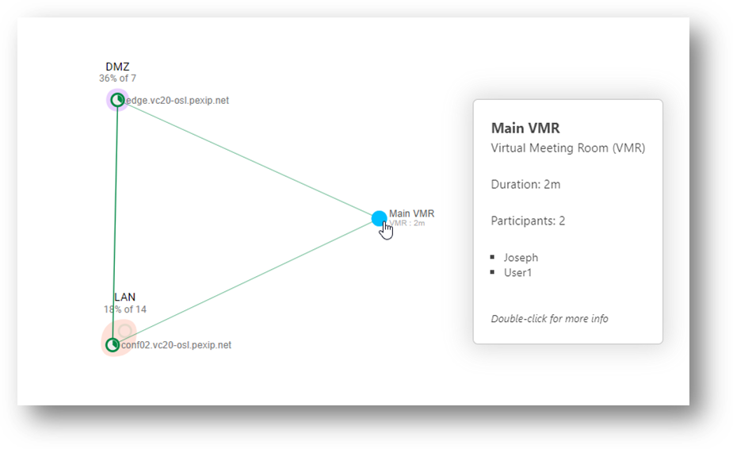
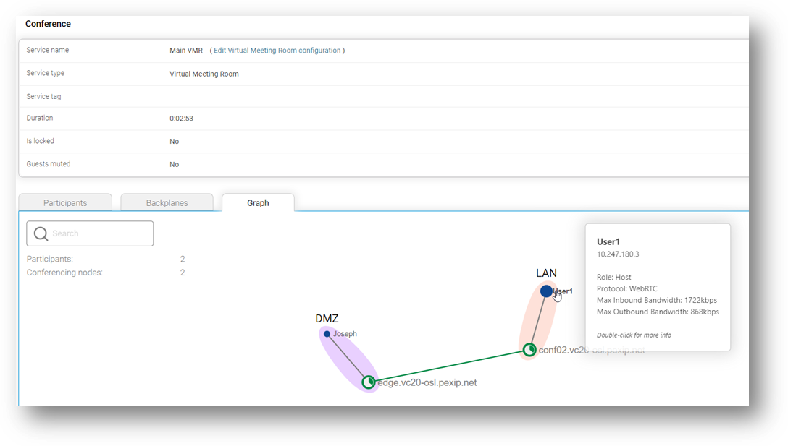

Suggested completion time: 15 minutes
Use section #4.2 of the lab sheet.
Each person in the group places a call into the VMR service. Ensure that at least one person calls into the service through the LAN location, and one person calls into the same service through the external location at the same time.
Grab some screenshots of the calls in operation at the same time. Show Live View from the Management Node, and
drill down into the VMR call service. It’s also good to show a screenshot of the actual call from the end
user’s point of view, for example:
Screenshot of the main Live View showing a VMR service, with users connected to the DMZ and LAN nodes:

Screenshot of the conference graph of the VMR service showing individual participants connected in different locations (notice how a backplane connects the locations where the same VMR instance is in operation):

Screenshot of the user experience (for the first user) connecting to the VMR Service:
Screenshot of the user experience (for the second user) connecting to the VMR Service:

However, if you have finished early, have a look around at your classmates. How are they doing? Can you help? It’s good to share, and if you help, it will also help cement your knowledge.